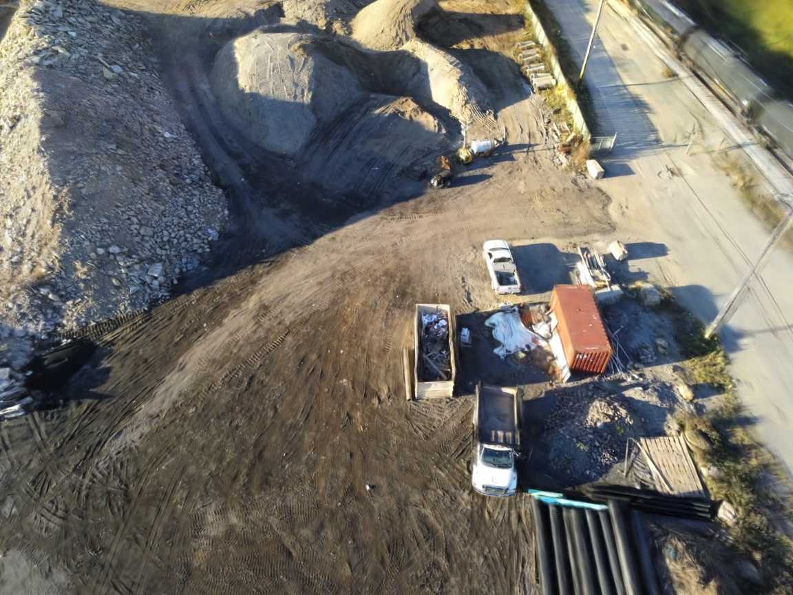
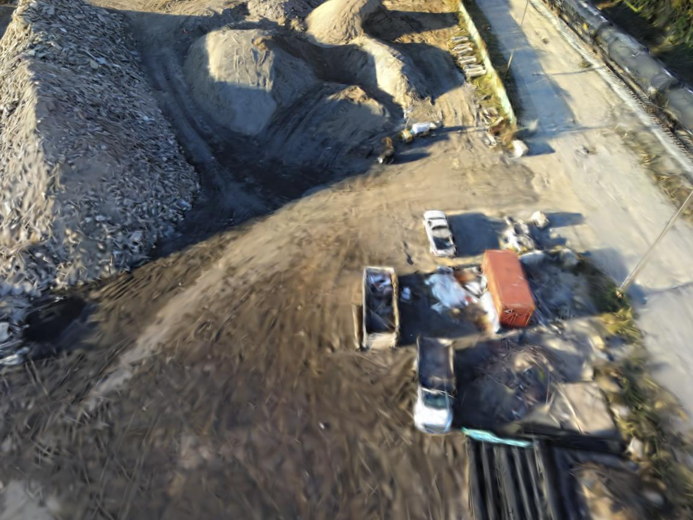
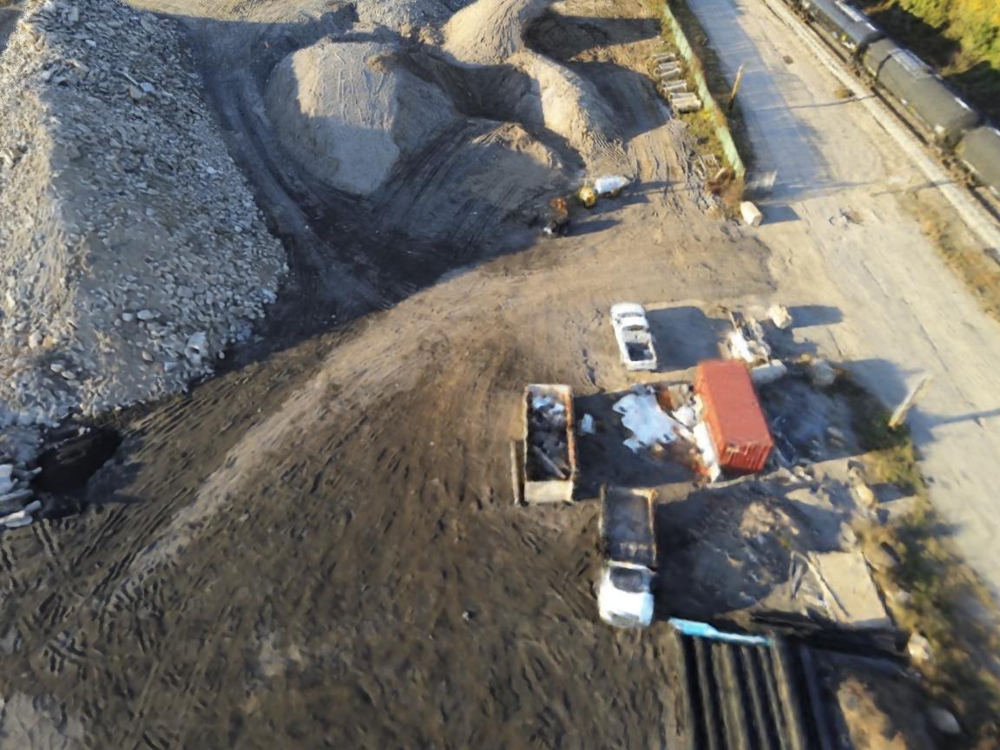
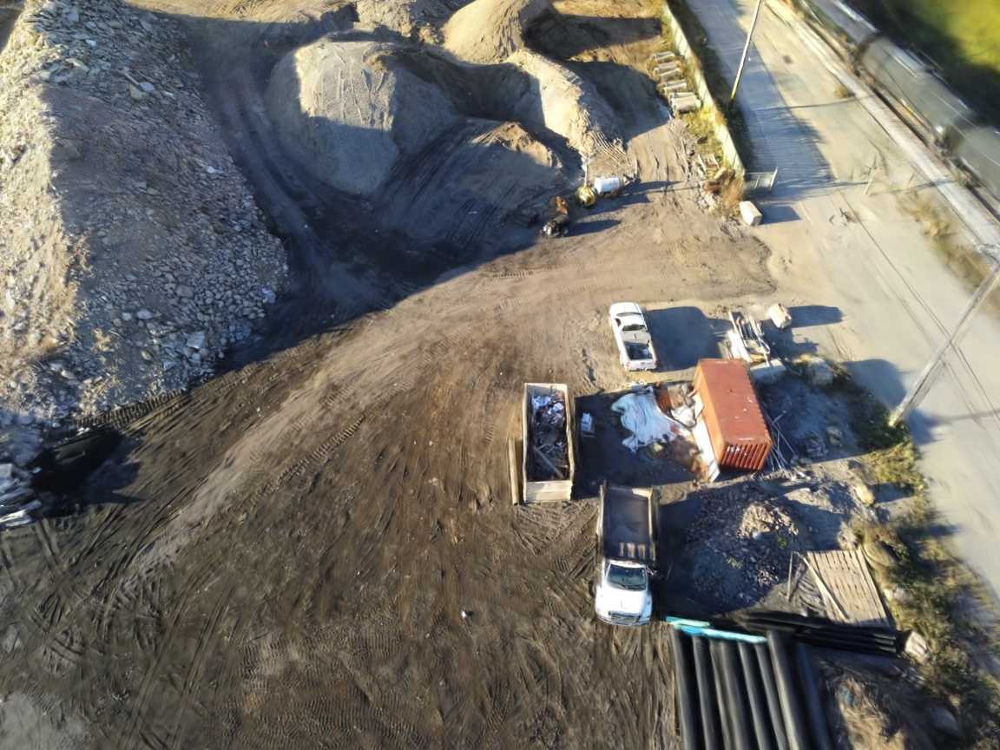
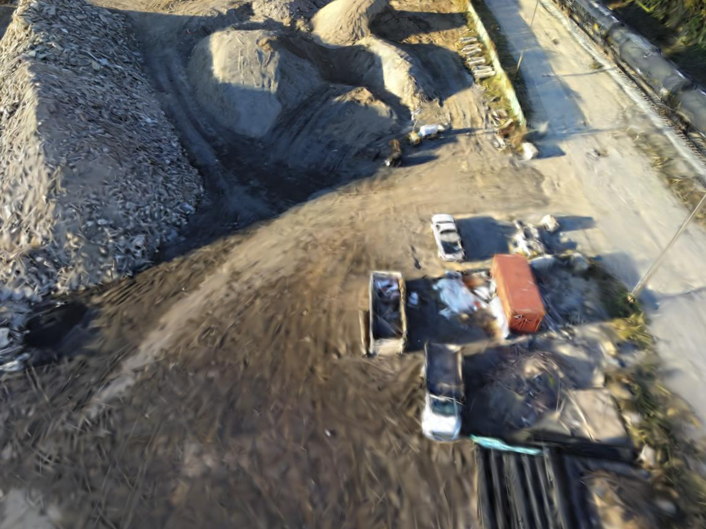
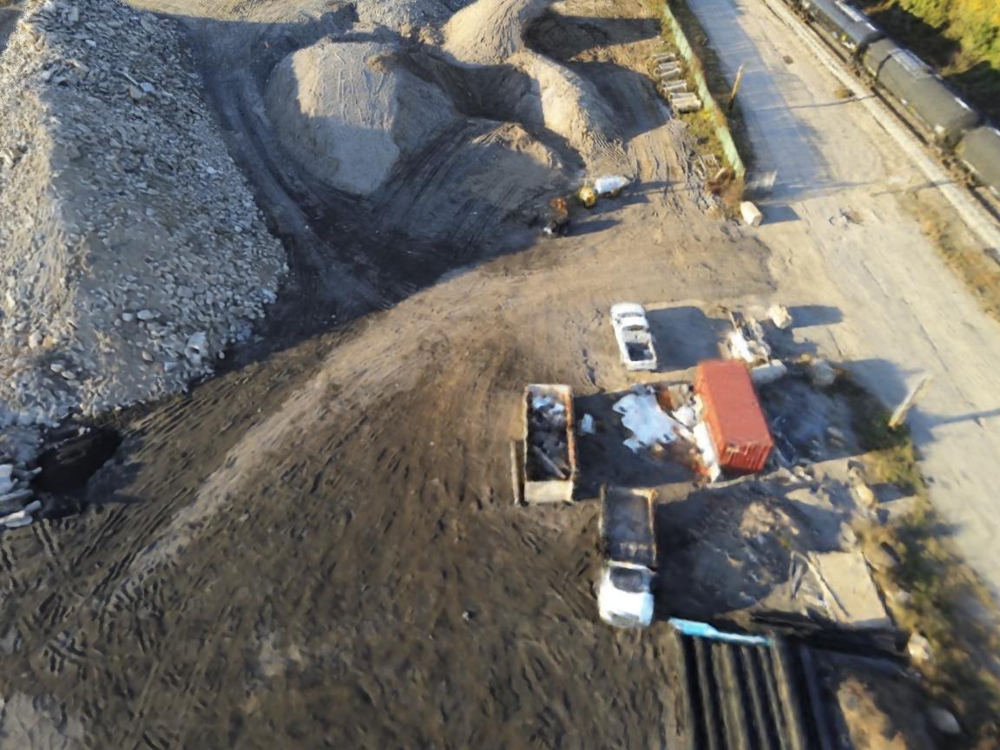

CoSurfGS: Collaborative 3D Surface Gaussian Splatting with Distributed Learning for Large Scene Reconstruction
Yuanyuan Gao*1
Yalun Dai*2
Hao Li*1
Weicai Ye†3,4
Junyi Chen4
Danpeng Chen3
Dingwen Zhang†1
Tong He4
Guofeng Zhang3
Junwei Han1
1Brain and Artificial Intelligence Lab, Northwestern Polytechnical University,
2Nanyang Technological University, 3Zhejiang University, 4Shanghai AI Lab,
*Equal Contributions
†Corresponding Authors
Abstract
3D Gaussian Splatting (3DGS) has demonstrated impressive performance in scene reconstruction. However, most existing GS-based surface reconstruction methods focus on 3D objects or limited scenes. Directly applying these methods to large-scale scene reconstruction will pose challenges such as high memory costs, excessive time consumption, and lack of geometric detail, which makes it difficult to implement in practical applications. To address these issues, we propose CoSurfGS, a multi-agent collaborative fast 3DGS surface reconstruction framework based on distributed learning for large-scale surface reconstruction. Specifically, we develop local model compression (LMC) and model aggregation schemes (MAS) to achieve high-quality surface representation of large scenes while reducing GPU memory consumption. Extensive experiments on Urban3d, MegaNeRF, and BlendedMVS demonstrate that our proposed method can achieve fast and scalable high-fidelity surface reconstruction and photorealistic rendering.

Fig. 1 Our proposed CoSurfGS serves as a ”device-edge-cloud” distributed learning framework that enables multi-agent parallel training. Under this framework, we can achieve superior large-scene reconstruction performance w.r.t the novel view synthesis, depth rendering, and surface normal prediction results (see the bottom part). Meanwhile, this framework can also accelerate the whole modeling process while preserving the privacy of local regions.
CorSurfGS Mesh Visualization
We visualize the surface reconstruction results of CoSurfGS on the BlendedMVS compared with NeUS and BakedAngelo. Use the controls to switch between scenes.
LMC and MAS Module
LMC module prune the Gaussian points lacking multi-geometry.
MAS module uses a self-distallation methold to resolve boundary blurring.
CoSurfGS on novel view synthesis
 





CoSurfGS training resources consumption on Mill19 dataset and UrbanScene3D dataset
Fig. 2 We present the time (hh: mm), the number of final points (106), and the allocated memory (GB) during evaluation. For 3DGS-based methods, the overall training time includes the COLMAP process and training process
Please consider citing our paper
@misc{gao2024cosurfgscollaborative,
title={CoSurfGS:Collaborative 3D Surface Gaussian Splatting with Distributed Learning for Large Scene Reconstruction},
author={Yuanyuan Gao and Yalun Dai and Hao Li and Weicai Ye and Junyi Chen and Danpeng Chen and Dingwen Zhang and Tong He and Guofeng Zhang and Junwei Han},
year={2024},
eprint={2412.17612},
archivePrefix={arXiv},
primaryClass={cs.CV}
}